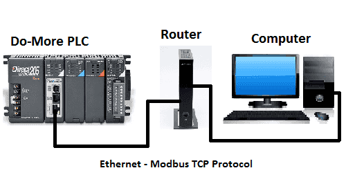
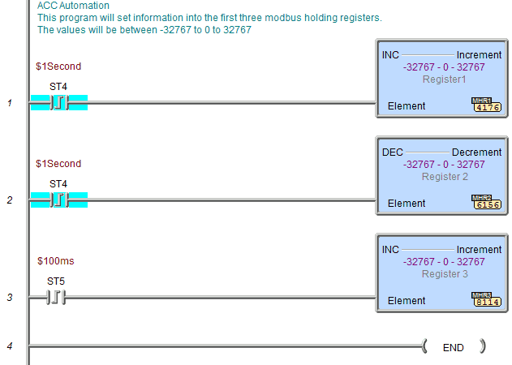

Используя Visual Basic 2015, можно внести в базу данных Microsoft Access данные о трех регистрах хранения с ПЛК, а также время и дату. Мы будем ежеминутно вносить в базу данных информацию, которую мы собираем с ПЛК через Modbus TCP (Ethernet). Весь код будет выполнен и показан, чтобы вы могли реализовать его в своем приложении с различными параметрами. Информация, собранная в базе данных, может быть распространена или проанализирована в будущем.

Visual Basic 2015 будет использоваться с клиент-серверной библиотекой EasyModbusTCP для .net. Мы будем взаимодействовать с ПЛК системы автоматизации Direct – Do-More. Используя бесплатное программное обеспечение для моделирования PLC Designer Software, мы получим три значения из регистров хранения Modbus, используя протокол Modbus TCP. Как только мы получим эту информацию из программируемого логического контроллера, она будет помещена в базу данных Microsoft Access (2010). Это будет сделано с помощью SQL-команды для вставки данных.
В Automation Direct есть мощный тренажер с ПЛК Do-More. Программное обеспечение для ПЛК можно бесплатно скачать на сайте Automation Direct.
Мы начнем с программы ПЛК. Будут использоваться первые три регистра хранения. В ПЛК Do-More это будут MBR1, MBR2 и MBR3. Это будет соответствовать регистрационным номерам 40001, 40002 и 40003. Ниже приведена таблица со всеми ссылками на Modbus-соединения для Do-More.
|
Coil/Register Numbers |
Data Addresses |
Type |
Do-More PLC |
Table Name |
|
00001-09999 |
0000 to 270E |
Read-Write |
MC1 to MC1023 |
Discrete Output Coils |
|
10001-19999 |
0000 to 270E |
Read-Only |
MI1 to MI1023 |
Discrete Input Contacts |
|
30001-39999 |
0000 to 270E |
Read-Only |
MIR1 to MIR2047 |
Analog Input Registers |
|
40001-49999 |
0000 to 270E |
Read-Write |
MHR1 to MHR2047 |
Analog Output Holding Registers |
Примечание: ПЛК Do More использует для обмена данными область Modbus. Это связано с тем, что прямой доступ к цифровому вводу-выводу может быть опасным при подключении через Ethernet к Интернету. Данные должны поступать в эту область и выходить из нее с помощью программы ПЛК.
Вот программа ПЛК, которая устанавливает три регистра.

Следующее, что нам нужно сделать, это настроить нашу базу данных Microsoft Access 2010. Наша база данных будет называться ACC_Database и будет расположена по следующему адресу: “C:\AccLog”. У нас будет одна таблица с именем ACC_Log. В таблице у нас будет пять полей: LogDate, LogTime, Register1, Register2, Register3.
Visual Basic 2015 является бесплатным и входит в состав Visual Studio 2015. Его можно загрузить по следующему адресу: https://www.visualstudio.com/en-us/products/visual-studio-community-vs
EasyModbusTCP - это бесплатная программа. Ссылка на нее будет указана в нашей программе visual basic. Ее можно загрузить по следующему адресу: https://sourceforge.net/projects/easymodbustcp/
После загрузки вы должны извлечь файлы.
EasyModbusTCP - это клиент-серверная библиотека Modbus TCP, Modbus UDP для .NET и клиентская библиотека для JAVA. Клиент-сервер .NET (.dll) также поддерживает Modbus RTU. Он поддерживает следующие функциональные коды: – Считывание катушек (FC1)
– Считывание дискретных входов (FC2)
– Считывание регистров удержания (FC3)
– Считывание входных регистров (FC4)
– Запись в одну катушку (FC5)
– Запись в один регистр (FC6)
– Запись нескольких катушек (FC15)
– Запись нескольких регистров (FC16)
– Чтение/запись нескольких регистров (FC23)
Теперь мы вызовем visual Studio и создадим наш проект. Первое, что мы должны сделать, это обратиться к нашей EasyModbus.dll-файл.
Private Sub LinkLabel1_LinkClicked(sender As Object, e As LinkLabelLinkClickedEventArgs) Handles LinkLabel1.LinkClicked
' Specify that the link was visited.
Me.LinkLabel1.LinkVisited = True
' Navigate to a URL.
System.Diagnostics.Process.Start ("https://www.accautomation.ca")
End Sub